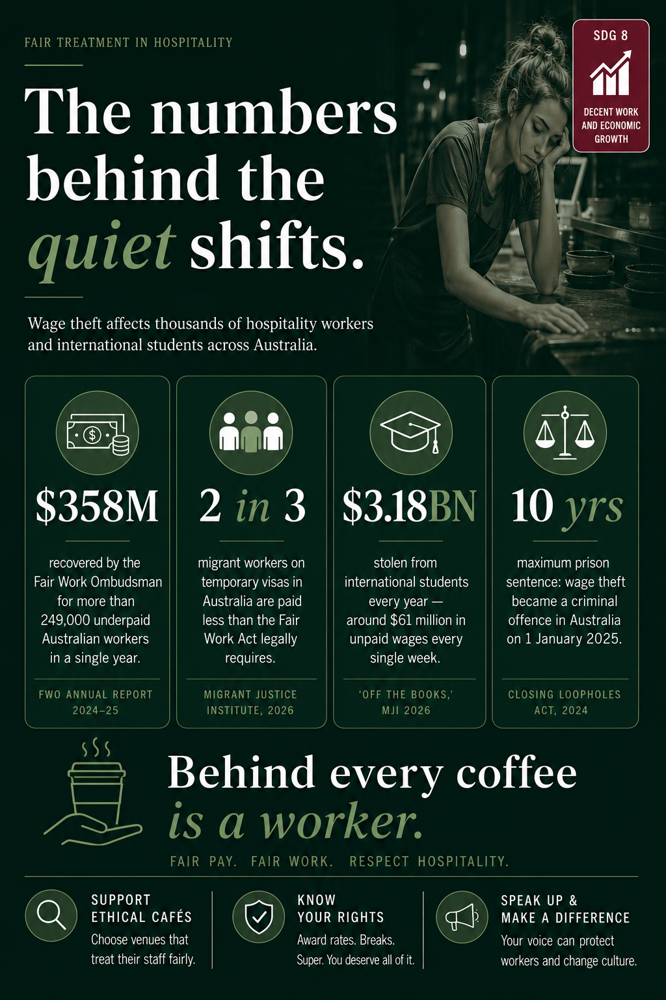
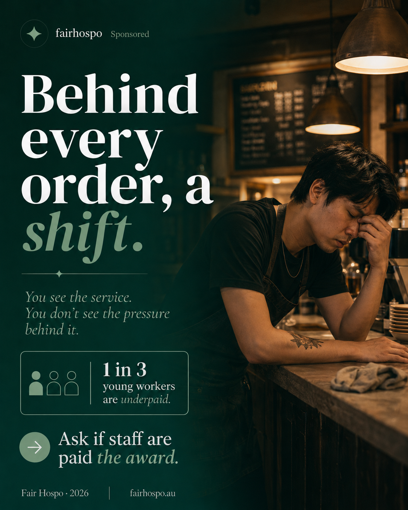
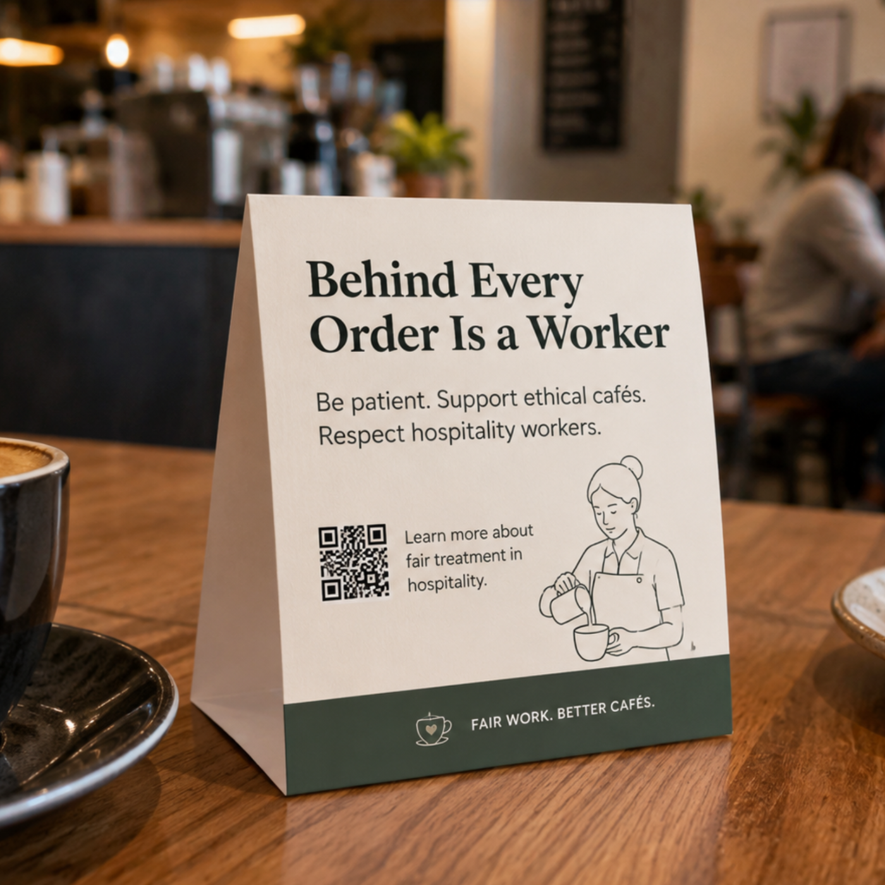
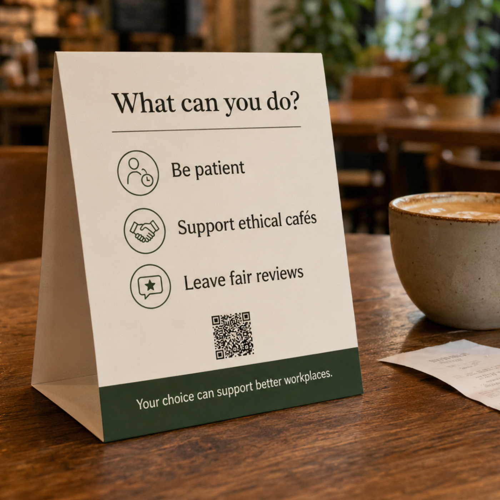

The Issue
Essential, invisible.
Misinformation can move fast through group chats, social feeds, and school communities. A post that looks harmless can confuse people, spread fear, or make it harder to find reliable help.
A campaign about the people behind your coffee, your dinner, your late-night drinks and the working lives we rarely see.
The Issue
Misinformation can move fast through group chats, social feeds, and school communities. A post that looks harmless can confuse people, spread fear, or make it harder to find reliable help.
The Action
The Goal
This PSA supports the Department of Economic and Social Affairs Goal 8: Sustainable Development Goal 8 by encouraging fair treatment, better pay, and respect for hospitality workers. When students share responsibly, they help build safer, more inclusive workplaces and support decent work in their communities.
A short edited podcast featuring Dr Justin Matthew Pang, Senior Lecturer in Tourism and Hospitality Management at RMIT University Vietnam.
This clip highlights the key message from our full interview: hospitality workers face pressure that customers do not always see, but small actions like patience, respect, positive reviews and supporting ethical businesses can make a difference.
PSA Infographic
This visual summary presents the key evidence behind the PSA: wage theft, underpayment and the everyday choices customers can make to support fair treatment in hospitality.

Campaign Image
This poster-style campaign image turns the PSA into a quick social media prompt: customers see the service, but not always the pressure behind it. The call to action asks people to check whether staff are paid the award and support venues that treat workers fairly.

Offline Resource
This table card brings the PSA into cafes and hospitality spaces where customers make quick choices. The front introduces the campaign message, while the back gives simple actions people can take while ordering, reviewing and choosing where to spend their money.


Community Recognition
Businesses and customers can help make fair hospitality work more visible. The recognition pathway is designed to highlight establishments that commit to respectful service, fair pay practices, safe working conditions and open conversations about staff wellbeing.
Register your venue, show how staff are supported, and display PSA materials so customers know your establishment backs decent work.
Nominate venues, ask respectful questions, leave specific positive reviews, and choose places that treat workers fairly.